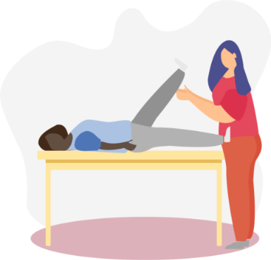

Programa de tratamento especializado em Fisioterapia
Domiciliar e Unidades
Faça fisioterapia sem estresse no conforto da sua casa.
Fácil e pratico! É só agendar o atendimento domiciliar.

Faça fisioterapia sem estresse no conforto da sua casa.
Fácil e pratico! É só agendar o atendimento domiciliar.
Nossa proposta é realizar um tratamento individualizado , com embasamento científico, onde será realizado uma avaliação detalhada feita por um especialista da nossa equipe.
O tratamento é personalizado para você, sendo utilizado equipamentos modernos e protocolos com exercícios, terapia manual e orientações com referência científica.
Buscando sempre o melhor tratamento para sua patologia.
Entrada principal na Rua Voluntários da Pátria, 2490
Entrada lateral na Rua Conselheiro Saraiva, 163
Santana São Paulo/SP

Faça fisioterapia sem estresse no conforto da sua casa.
Fácil e pratico!
É só agendar o atendimento
domiciliar.